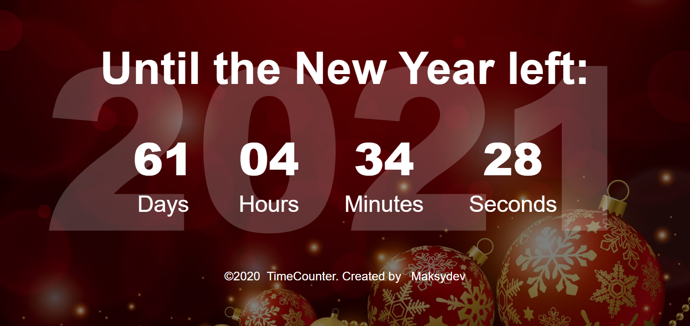
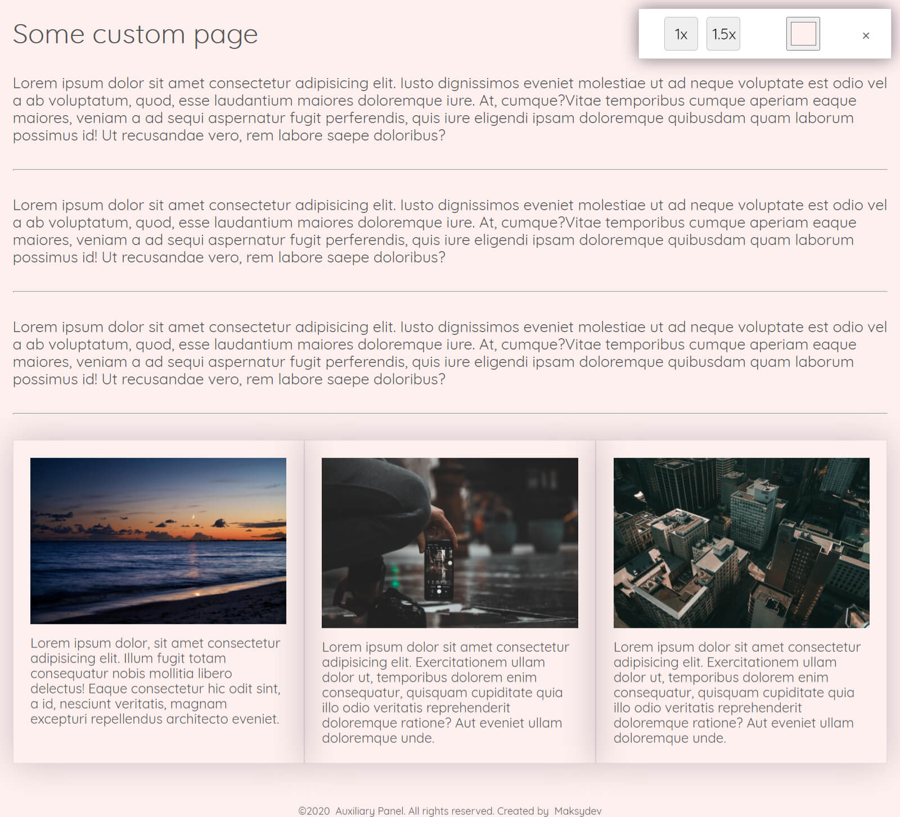
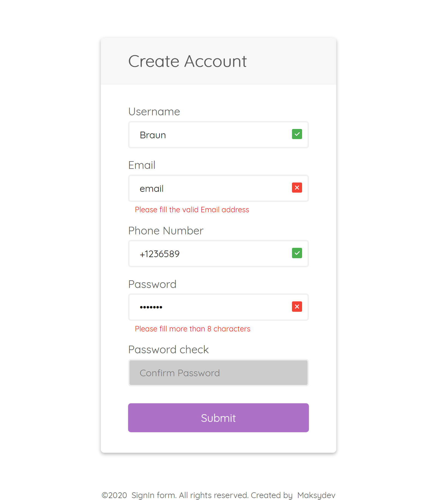

My Portfolio

Landing Page 12/05/2019
Сharity assistance to children
Project for a website for charity assistance to children. The project was created for practical exercise and professional development. The project was built with SASS, GULP, BEM, GitHub. Compliance with cross-browser compatibility and adaptation for mobile devices.
Check Project Online

Javascript script 18/09/2020
Countdown Script
Countdown script for web site on clear Javascript code (ES6) .
With automatic year change on the background.
Easy add to your project and customise as you need.
Check Project Online
BackEnd Web11/12/2020
Tours Web
Tours WebSite. Created with Node.js, Express, MongoDB (Mongoose) used JWT Token. Was build API with Postman.
Check Project Online
You can signin:
user: Admin@admin.com
Psw: testtest
***Only Desktop version***

Landing Page 21/03/2020
Russian fish company
Landing page for a working fish processing company. One of my first works, implemented without GULP and Sass. Compliance with cross-browser compatibility and adaptation for mobile devices. The design is also mine))
Check Project Online

Landing Page24/06/2020
Cleaning company website
Cleaning company website project. The project was created for practical exercise and professional development. The project was built with SASS, GULP, BEM, GitHub. Compliance with cross-browser compatibility and adaptation for mobile devices.
Check Project Online

Javascript script28/09/2020
Auxiliary Panel
Auxiliary Fixed Panel for web site on clear Javascript code (ES6).
With scale buttons and background change button. Script add the choice to your browser local storage. With clear button you also clear local storage.
Easy add to your project and customise as you need.
Check Project Online

Landing Page09/12/2019
Travell company website
Travell company website project (Russian Language). The project was created for practical exercise and professional development. The project was built with SASS, GULP, BEM, GitHub. Compliance with cross-browser compatibility and adaptation for mobile devices.
Check Project Online

Javascript script01/10/2020
SingUp modal with validation
Singup modal with validation for web site on clear Javascript code (ES6).
Validates input rows for text, numbers, email. Submit button is not active till all inputs are not filled. Sending Fetch POST object with user information.
Easy add to your project and customise as you need.
Check Project Online
Landing Page06/08/2020
Restaurant website
Restaurant website project. The project was created for practical exercise and professional development. The project was built with SASS, GULP, BEM, GitHub. Compliance with cross-browser compatibility and adaptation for mobile devices.
Check Project Online
Landing Page24/09/2020
Recruiter agency website (Ukraine)
Recruiter agency website.Was built with SASS, GULP, Webpack, BEM, GitHub. The project was created for practical exercise and professional development. Compliance with cross-browser compatibility and adaptation for mobile devices. With out using JQuery.
Check Project Online
Javascript script15/11/2020
Weather App with API requests
Web App showing the current weather in the city and general information about the country
Created with Use Strict mode (ES6+). With two diferent API Fetch requests. With option to show wheather for 7 days forward. With random background pictures.Location option is not working because of subdomain.
Check Project Online
Javascript script28/11/2020
Javascript Dice Game
Simple Javascript game on native JAVAScript.
Both Desktop and mobile version of game. For two players. Who get first 100 points - WINs.
Check Project Online